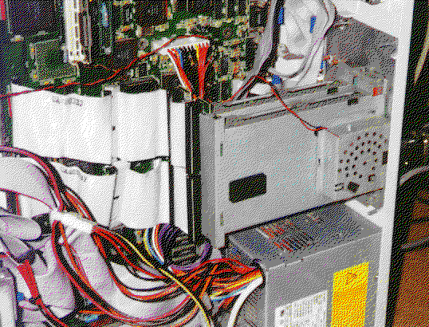
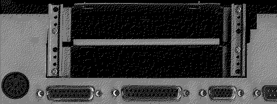

Previous
Next
TOC
Nun müssen noch zwei maximal 15 cm lange Flachbandkabel angefertigt
werden welches zwei je Buchsenleisten und je eine Stiftwanne besitzt.
Die Stiftwanne kommt in das von der Hauptplatine kommende VME Bus
Kabel rein und die beiden Buchsenleisten kommen an die beiden VME Bus
Steckplätze und zu guter letzt müssen die beiden VME Bus Steckplätze
noch montiert werden im Rechnergehäuse (was jedem frei überlassen ist,
da nicht jedes Towergehäuse dieselben Montageplätze bietet.
Fertig ist das ganze!
So sieht das ganze dann an meinem TT030 (PamsNet VME Netzwerkkarte
und Maxtrix C110 Grafikkarte) aus.

Die Lösung von Ronald Wicklein für die VME Bus Halterung.

weiterblättern
Kapitel Der VME Bus im MegaSTE und TT030, Seite 5